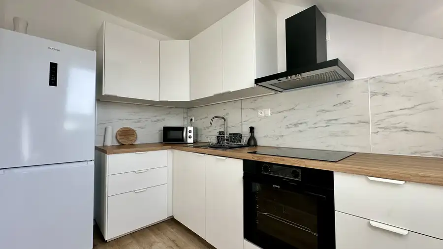

Aktuálna ponuka
6 nehnuteľností, predovšetkým byty, rodinné domy. Každá má vlastnú stránku s fotkami, popisom a mapou.
Prezrieť ponukuTomáš ŠibalRealitný maklér
Realitný maklér · CASMAR REALITY s.r.o.
Predaj a prenájom nehnuteľností · Zavar, Piešťany, Boleráz

 BytNové10
174 990 €Kompletne zrekonštruovaný a zariadený 2-izbový byt v top lokalite Piešťan (Teplická ul.)
Piešťany
2-izbový49 m²
Hľadáte bývanie v Piešťanoch, kde nemusíte riešiť žiadne dodatočné investície ani prerábky? Chcete bývať na skok od centra, no zároveň v obklopení…
DomNové10
144 990 €VIRTUÁLNA PREHLIADKA / Priestranný rodinný dom s veľkým potenciálom
Boleráz
133 m²
Hľadáte nehnuteľnosť, ktorú si pretvoríte presne podľa svojich predstáv? Ponúkame na predaj samostatne stojaci rodinný dom v obci Boleráz,…
Chalupa, rekreačný domčekNové10
164 990 €Novostavba chaty s výhľadom na Kunovskú priehradu – bezpečie a komfort
Senica
95 m²
Hľadáte únik z mesta, kde sa spája moderné bývanie s relaxom v prírode? Ponúkame Vám na predaj novostavbu chaty v prestížnej a vyhľadávanej…
BytNové10
174 990 €Kompletne zrekonštruovaný a zariadený 2-izbový byt v top lokalite Piešťan (Teplická ul.)
Piešťany
2-izbový49 m²
Hľadáte bývanie v Piešťanoch, kde nemusíte riešiť žiadne dodatočné investície ani prerábky? Chcete bývať na skok od centra, no zároveň v obklopení…
DomNové10
144 990 €VIRTUÁLNA PREHLIADKA / Priestranný rodinný dom s veľkým potenciálom
Boleráz
133 m²
Hľadáte nehnuteľnosť, ktorú si pretvoríte presne podľa svojich predstáv? Ponúkame na predaj samostatne stojaci rodinný dom v obci Boleráz,…
Chalupa, rekreačný domčekNové10
164 990 €Novostavba chaty s výhľadom na Kunovskú priehradu – bezpečie a komfort
Senica
95 m²
Hľadáte únik z mesta, kde sa spája moderné bývanie s relaxom v prírode? Ponúkame Vám na predaj novostavbu chaty v prestížnej a vyhľadávanej…
 Dom10
349 990 €Moderný 4-izbový bungalov s maximálnym súkromím a veľkým pozemkom
Dolná Krupá
130 m²
Ekluzívne na predaj! Moderný 4-izbový bungalov s maximálnym súkromím a veľkým pozemkom v Dolnej KrupejHľadáte rodinné bývanie, kde budete mať…
Dom10
349 990 €Moderný 4-izbový bungalov s maximálnym súkromím a veľkým pozemkom
Dolná Krupá
130 m²
Ekluzívne na predaj! Moderný 4-izbový bungalov s maximálnym súkromím a veľkým pozemkom v Dolnej KrupejHľadáte rodinné bývanie, kde budete mať…
 Byt10
164 990 €Priestranný 2-izbový byt s loggiou v lokalite plnej zelene
Zavar
2-izbový54.09 m²
Ponúkame na predaj priestranný, kompletne vybavený 2-izbový byt s výbornou dispozíciou a nízkymi prevádzkovými nákladmi v pokojnej zelenej lokalite v…
Byt10
164 990 €Priestranný 2-izbový byt s loggiou v lokalite plnej zelene
Zavar
2-izbový54.09 m²
Ponúkame na predaj priestranný, kompletne vybavený 2-izbový byt s výbornou dispozíciou a nízkymi prevádzkovými nákladmi v pokojnej zelenej lokalite v…

Byt10 Cena dohodouPRENÁJOM Svetlý 1-izbový byt s parkovaním Zavar 1-izbový36 m² Ponúkame na prenájom príjemný a kompletne zariadený 1-izbový byt s výmerou 36 m² v tichej, zelenej lokalite obce Zavar (skvelá dostupnosť do Trnavy,…Tomuto výberu zatiaľ nezodpovedá žiadna ponuka. Napíšte mi, čo hľadáte.
Volám sa Tomáš Šibal. Som realitný maklér kancelárie CASMAR REALITY s.r.o. a pôsobím predovšetkým v lokalitách Zavar, Piešťany, Boleráz a Senica (Trnavský kraj).
6 nehnuteľností, predovšetkým byty, rodinné domy. Každá má vlastnú stránku s fotkami, popisom a mapou.
Prezrieť ponukuZavar, Piešťany, Boleráz, Senica, Dolná Krupá a okolie. Ponuku si môžete prezrieť podľa lokality.
Nehnuteľnosti v lokaliteOdhad trhovej ceny, príprava prezentácie, obhliadky, zmluvy a odovzdanie nehnuteľnosti.
Dohodnúť stretnutieKaždý špendlík je jedna nehnuteľnosť z mojej ponuky. Kliknite a pozrite sa.
© prispievatelia OpenStreetMap
Na čo sa pýtate najčastejšie, skôr než sa stretneme.
Odhad trhovej ceny vychádza z aktuálnych ponúk a predajov v lokalite, nie z cenníkových tabuliek. Podmienky Vám poviem pri prvom telefonáte.
Najprv obhliadka a odhad ceny, potom príprava prezentácie (fotografie, popis, inzercia), obhliadky so záujemcami, rezervačná zmluva, kúpna zmluva, návrh na vklad do katastra a odovzdanie nehnuteľnosti. O každom kroku viete vopred.
Najrýchlejšie cez WhatsApp alebo telefón. Termín stretnutia alebo obhliadky dohodneme podľa Vás.